AXIABLE
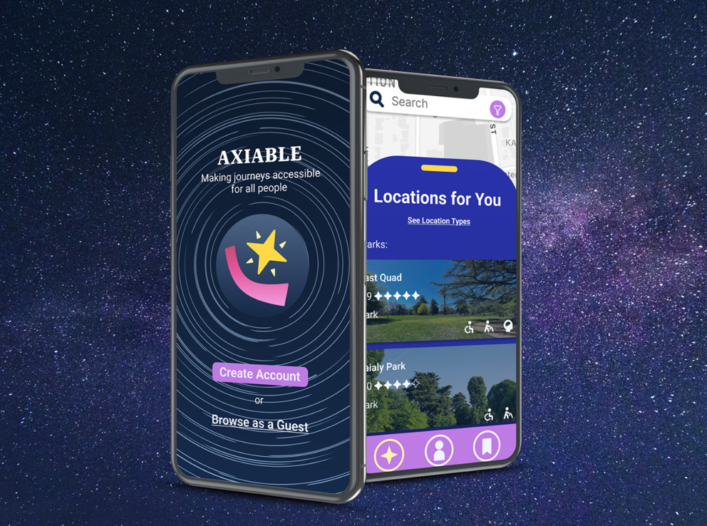For our assignment in DES 112, we were tasked with creating a mobile app design for social good. For my project, I designed a mobile mockup for Axiable, an app for people with disabilities to view and share information about the accessibility of different locations. In this case study, I'll be going over the design process for my app.
PROBLEM SPACE
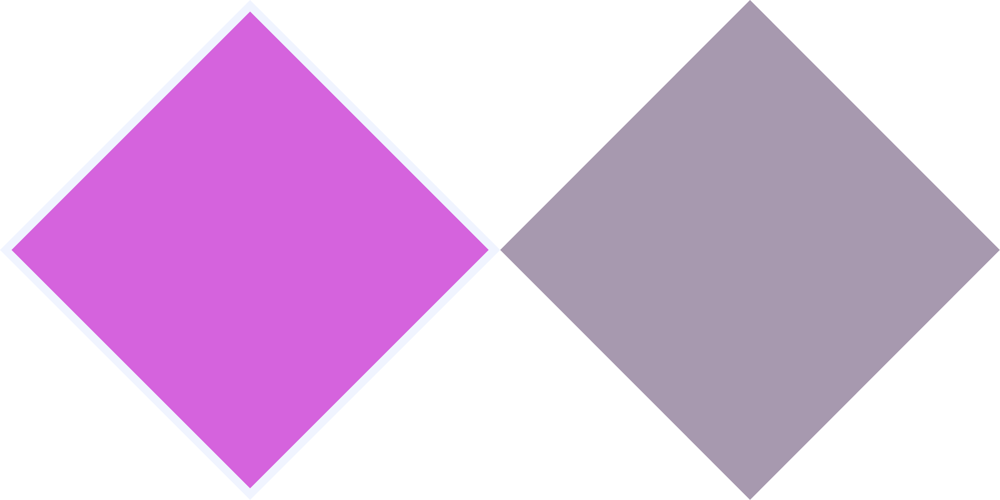Brainstorming and Affinity Mapping
The first step in my design process was to generate ideas by brainstorming and affinity mapping, which I did alongside my classmates. Before I decided on making my accessibility rating app, I initially wanted to design a product to help make public transportation more accessible to those with disabilities.
Initial Proposal Board
In this stage of the design process, I created a proposal board for my initial idea, where I explored different causes for inaccessibility in public transport and how we might solve this issue through a mobile app. After presenting to my professor and receiving some feedback, however, we concluded that it would be difficult to solve issues with public transportation infrastructure with a mobile app design.
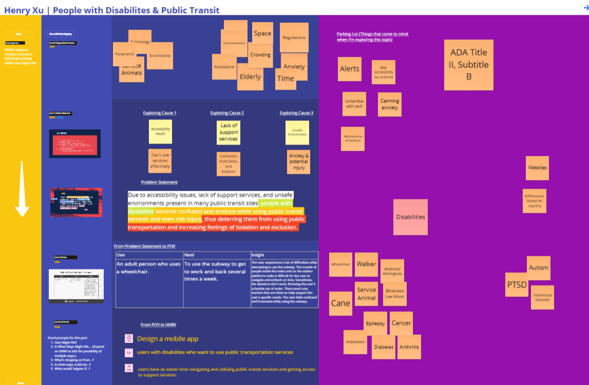Problem Statement & How Might We
I realized that while it might not be feasible for a mobile app to change infrastructure to be more accessible, users with disabilities could still use information about accessibility to improve their lives. Having come up with a new problem to solve, I came up with the following problem statement and How Might We statement:
- Problem Statement: "Due to a lack of information about the accessibility of locations, people with disabilities cannot identify accessible locations to visit or anticipate challenges they may face, thus putting them in difficult situations when traveling and discouraging them from exploring their world."
- HMW: "How might we design a mobile app that allows users to see and share information about the accessibility of different locations online?"
Competitive Analysis
Below are the competitive analyses I performed to gain more insight into how this problem is solved today.
Products:
- iAccess Life: an app with good features for rating/reviewing locations, but a low user base.
- Google Maps: a popular navigational tool with some accessibility information hindered by inaccurate information provided by businesses.

I performed an Experience Flow Analysis and SWOT analysis for each product.

Summary of Findings and Ideation
- People with disabilities have difficulty navigating locations due to inaccessible design.
- It's not easy for a mobile app to directly change how accessible places are, but they can provide users with information.
- Having prior knowledge of how accessible places are can help people with disabilities better navigate locations.
- Having prior knowledge of how accessible places are can help people with disabilities better navigate locations.
- Having prior knowledge of how accessible places are can help people with disabilities better navigate locations.
SOLUTION SPACE
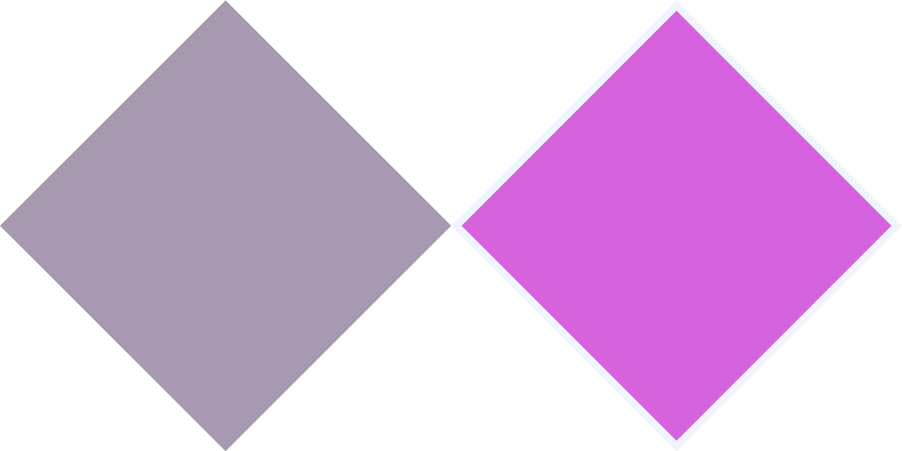Content Inventory
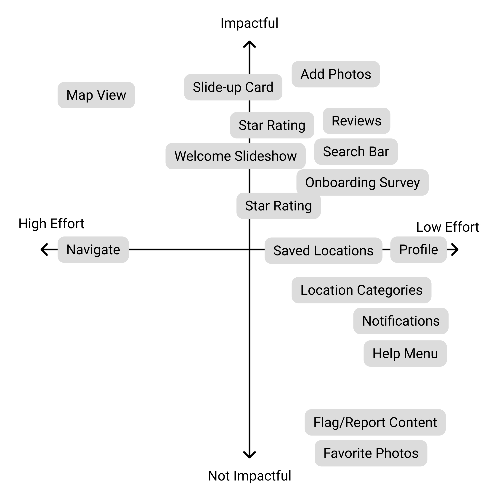- Many features, such as the star ratings, reviews, photos, and onboarding survey were absolute necessities while being relatively low effort.
- Some features, such as reporting content and favoriting photos, wouldn't be very difficult to represent but weren't significant enough for representing the product to be included in the mockup
- Options for having an interactable map view and a Navigate feature would likely be impactful but were very difficult to include in the Figma mockup. They appear only as visual inclusions.
Information Architecture
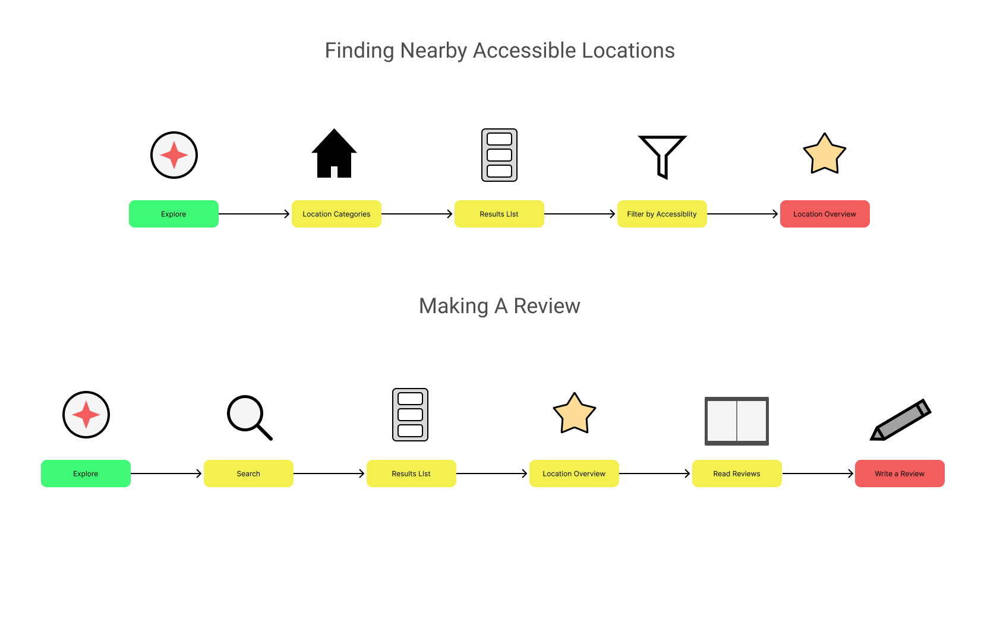For my informational architecture, I focused on key tasks I expected users to perform such as finding locations and making reviews.
Initial Draft
After figuring out what content should be in my app and how it should be arranged, I created my initial draft of the mockup, as shown below.
Design System
When designing the Axiable app, I decided that my visual design and branding should reflect an outer space theme. Stars were used in the past for navigation, and are used today for rating systems similar to Axiable's. I also want to help people with disabilities launch themselves to new heights and be able to explore a world previously made unknowable to them.
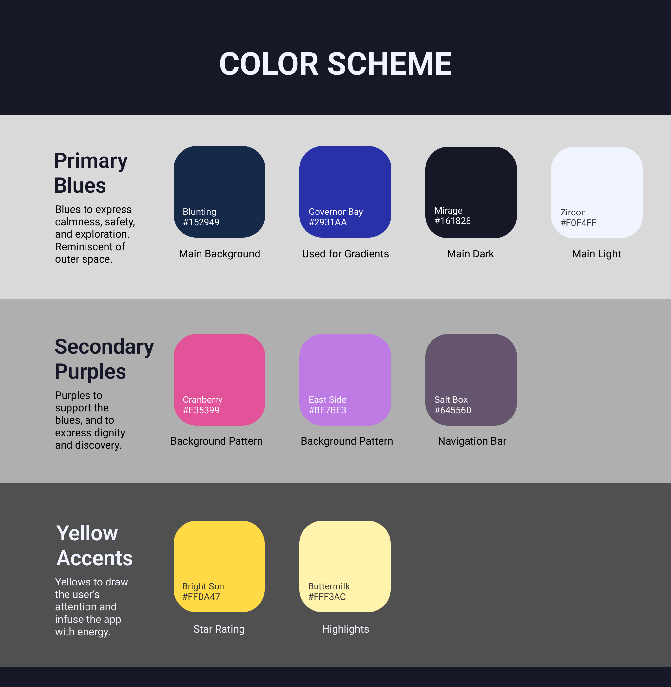 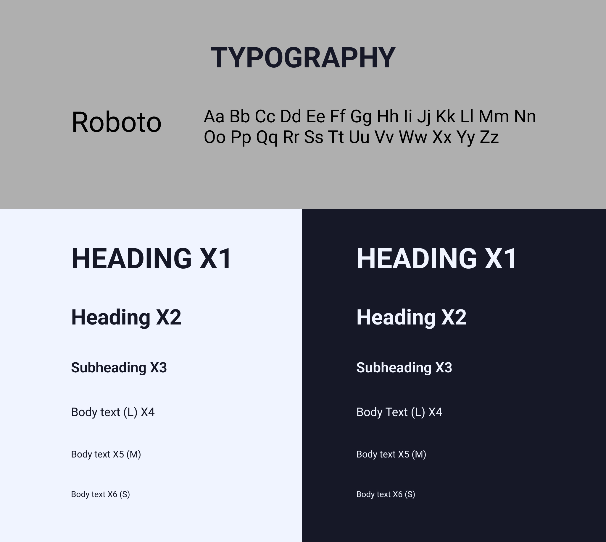 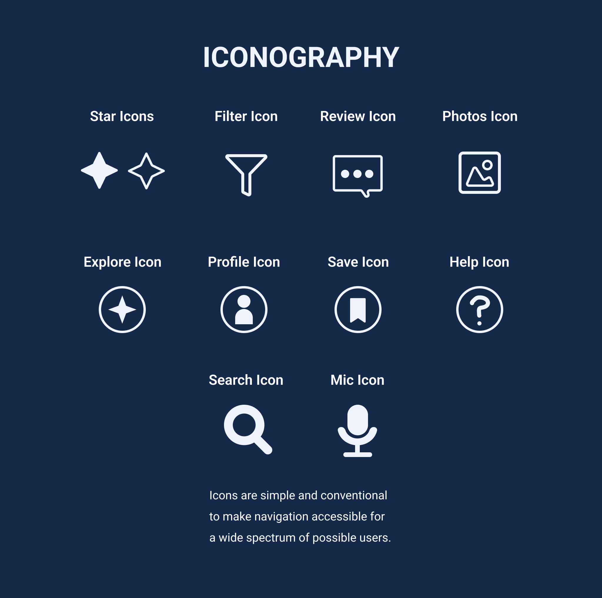 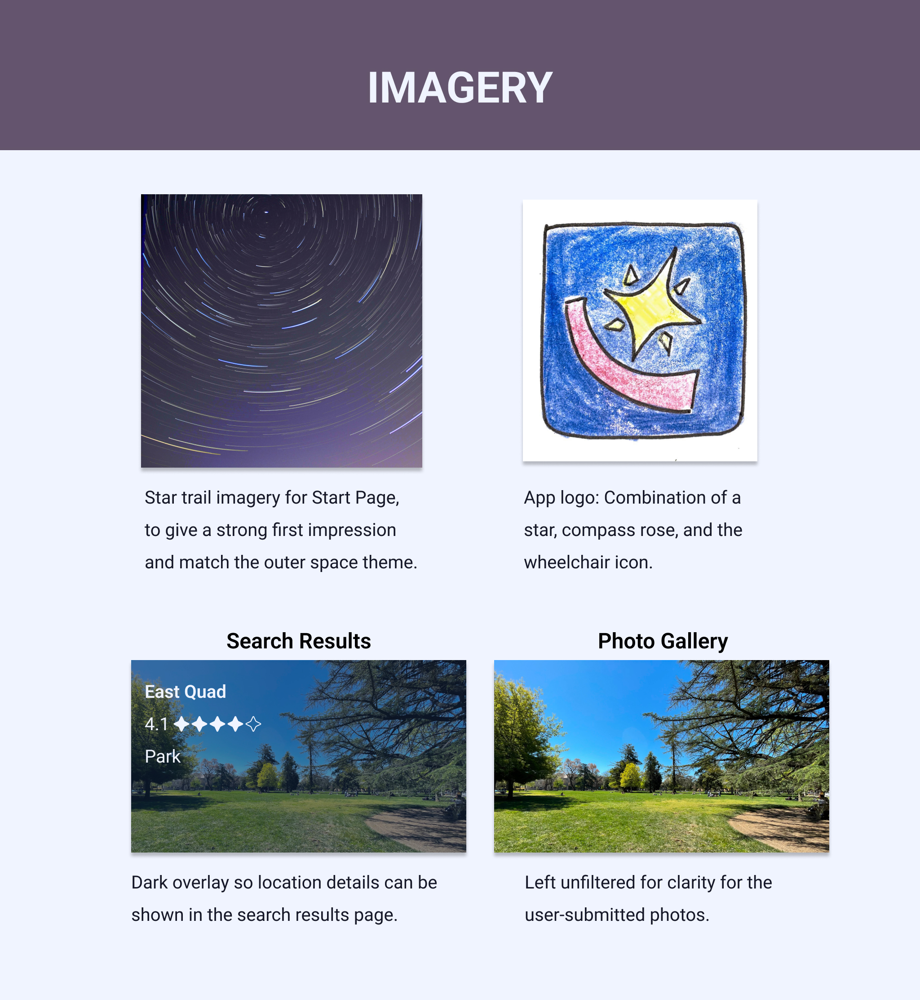 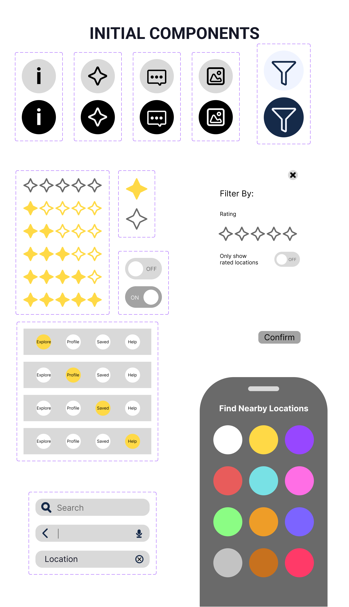After I constructed a couple more drafts of the mobile app and conducted a few more user interviews, I was ready to present my last prototype for final user testing.
Last Prototype for User Testing
Usability Report Key Insights
Based on the user tests I performed throughout my drafts of the mobile app design, I created a usability report to outline participants’ pain points and feedback.
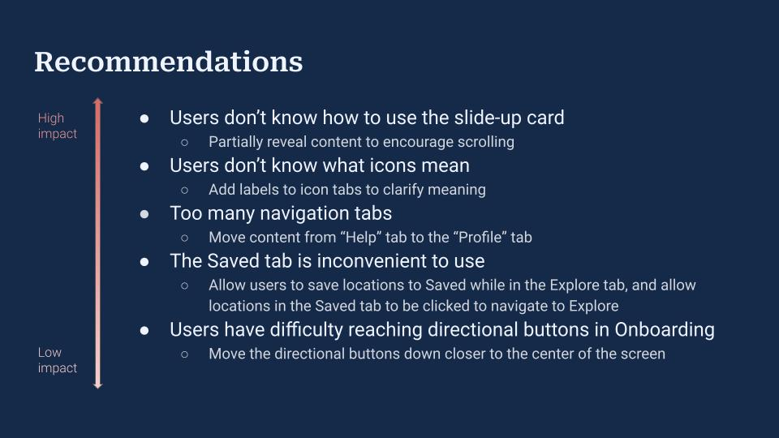FINAL SHOWCASE
Reflection & Next Steps
- This was my first time creating a mobile app mockup. This experience helped me develop many skills, such as conducting user research and creating an interactive medium. I also learned a lot about using Figma.
- While right now this is just a mockup of a mobile app, I truly believe a product like this could improve the lives of people with disabilities.
- For the next steps for a product like this, one of the ones could be to develop the map and navigational functions. It could be possible for navigational directions to be altered based on the user's accessibility needs
- One of the most important aspects of making an app like this work is having a large user base. I mentioned that the app iAccess Life has a small user base, making its usefulness limited. If users are unable to use the app effectively at its inception, they could be turned away for good. Significant investment into marketing and advertisement could be required to create a sufficient user base.